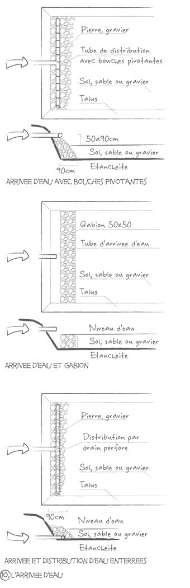

La phytoépuration
- Le principe
- La phytoépuration utilise les bactéries naturellement présentes dans le système racinaire des plantes pour épurer l’eau. Les bactéries aérobies (c’est-à-dire qui ont besoin d’oxygène et qui ne dégagent pas de mauvaises odeurs) « mangent » les matières organiques. Elles es transforment alors en matière minérale assimilable par les plantes. En retour, les plantes aquatiques fournissent de l’oxygène aux bactéries par leurs racines.
- Ainsi, les systèmes de phytoépuration dirigent les eaux usées vers des filtres plantés d’espèces végétales soigneusement sélectionnées et capables d’absorber les polluants tels que les nitrates ou les phosphates. On utilise souvent des plantes persistantes émergentes telles que les bambous, roseaux, massettes, laîches… Ces filtres plantés reproduisent donc un écosystème épuratoire naturel.
- Les plantes utilisées
- Les plantes qui sont les plus souvent utilisés dans les filtres sont des plantes persistantes émergentes, telles que les scirpes, laîches, papyrus, joncs, roseaux communs et massettes.
- Pour le lagunage des piscines écologiques et filtre avec eaux en surface ayant une teneur élevée en matière organique, on utilise généralement les scirpes car ils tolèrent de haut niveau d'éléments nutritifs, se cultivent facilement mais ne sont pas envahissants. Les massettes, quenouilles ou les roseaux ont été utilisés fréquemment en raison de leur grande tolérance pour de nombreux types d'eaux usées, mais ils ont l'inconvénient d'être envahissants, et leurs tubercules sont un des aliments préférés des rats musqués et des vers, ce qui peut les amener à proliférer là ou on ne le souhaite pas.
- Les différents types de filtres plantés
- Filtre à écoulement vertical
- L'eau est répartie à la surface du filtre et percole dans le massif filtrant. Il n'y a donc pas de phénomène de stagnation d'eau ou de photosynthèse mise en jeu, contrairement à une lagune. L'activité microbienne est fortement mise en jeu. Les plantes privilégiées pour ce genre de filtre sont généralement des plantes aquatiques à fort pouvoir racinaire (iris, massettes), leur rhizosphère favorisent la circulation de l'air lors des périodesd'assec et permettent de maintenir dans le temps la conductivité hydraulique du massif filtrant (décolmatage). Ceci intensifie donc l'activité bactérienne. Les matières organiques retenues en surface s'humidifient et se minéralisent. La flore bactérienne mise en jeu dans ce filtre est donc une flore de type aérobie hétérotrophe, qui se fixe sur le milieu.
- Filtre à écoulement horizontal
- Le filtre à écoulement horizontal a un écoulement similaire à celui d'une lagune, puisqu'un niveau d'eau est maintenu dans le bassin, et que l'eau en excès sort du bassin par un système de trop-plein. Toutefois, le bassin contient également un média filtrant (sables et graviers), et le niveau d'eau est inférieur au niveau de la couche de sable. Aucun phénomène de photosynthèse n'a lieu dans ce filtre. La flore bactérienne se fixe sur le milieu granulaire, et des phénomènes d'anoxie sont mis en jeu, ce qui peut favoriser une dénitrification partielle si ce filtre est mis en œuvre après un filtre à écoulement vertical. De plus, une diminution des phosphores, des médicaments et des hormones est possible.
